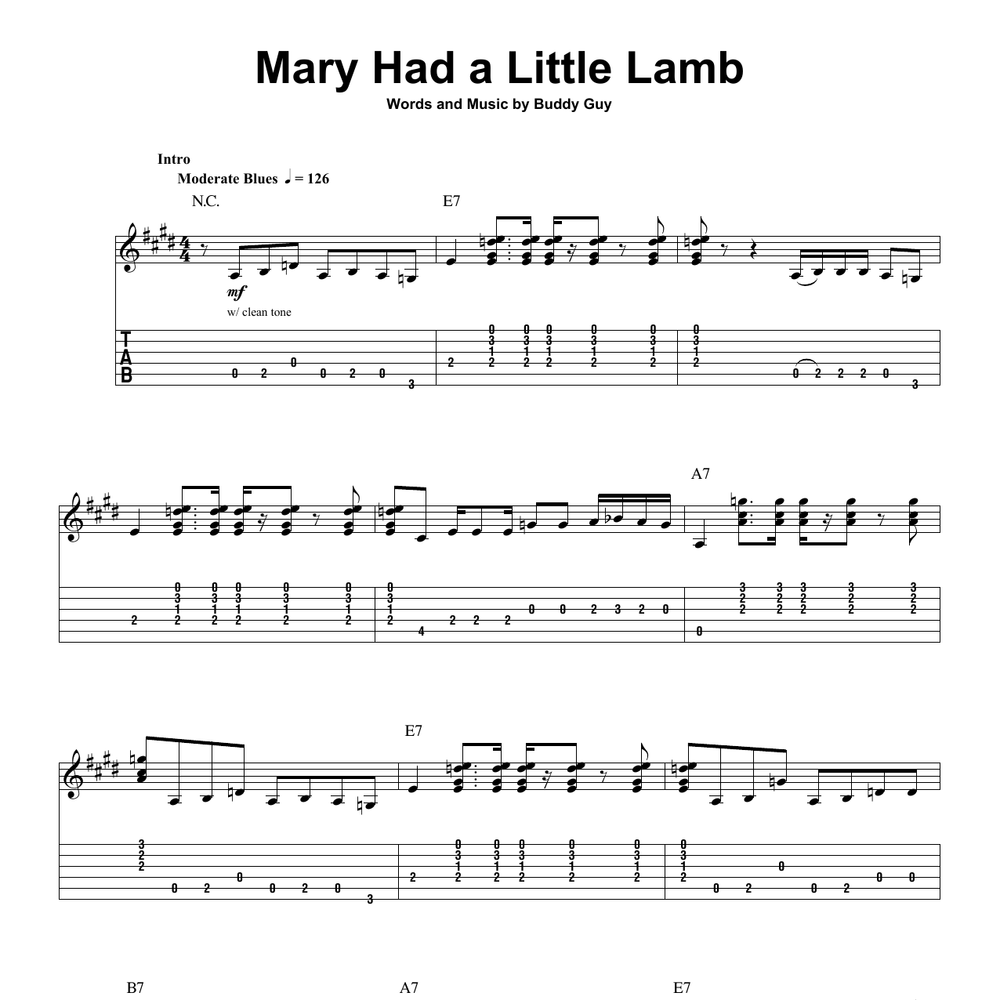

Sheet Vision
Sheet Vision was my senior design project. The goal was to create an application which would allow
the user to take a picture of a piece of sheet music, then have the music played back to them. The
app is also able to visualize a keyboard playing the notes to act as a suppliment to music practice.
During the course of the project, I acted as a computer vision programmer. I was in part responsible
for the development of the algorithm which cleaned up incoming images of sheet music, identified
measure lines, and encoded notes into a MIDI file format.
More information can be found on
our team's website